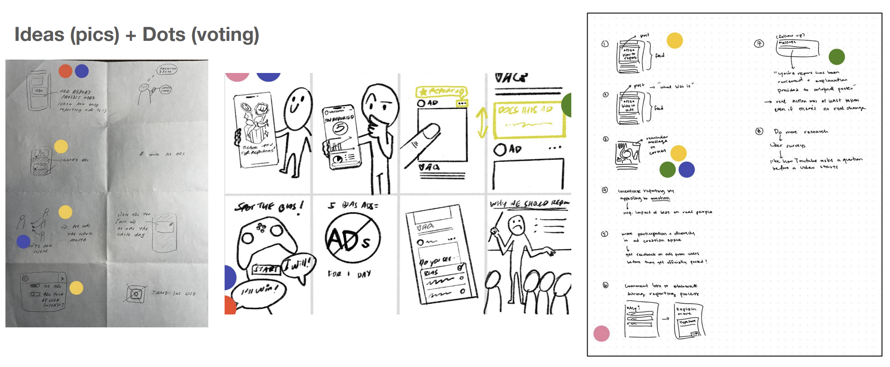

Project Overview
Embedded bias is everywhere--whether we realize it or not. Everyday technology systems such as search engines, phones, cars, soap dispensers, online websites, and more involve bias. Part of what makes embedded bias dangerous is the fact that it's embedded. More often than not, users, designers, programmers, or other people involved in the process of creating and using the system, might not actively notice the bias embedded in the system.
So, if people aren't actively cognizant of the harm they're inflicting, how will society change? Over the course of the semester, my groupmates (Sophia Hao, Skyler Hu, Jennifer Kim, Shannon Lee) and I set out to answer this question: “How might we motivate people to become cognizant of, and act appropriately upon, biased content and ads on their Instagram feed?”
We utilized directed storytelling, semi-structured interviews, surveys, speed dating, affinity diagramming, Crazy 8's, and more to understand our user base and conduct research on the market gap, ultimately creating a proposed educational Instagram carousel allowing users to become more aware of their role in noticing and reporting biased ads in their feed. With Instagram Interactives, users can learn about what bias is and how to report ads in an engaging and memorable way, which will lead to more awareness of what bias looks like and what actions they can take to address it.
Process
We started the research process by looking into instances of algorithmic bias on sites such as Google, Youtube, Facebook, Twitter, Reddit, and other sources. We realized bias manifested in many ways--algorithms, oversights from the team conducting research, survey methods, and in many other stages of the research and development process when building a product. We soon realized that we needed a clearer scope for our project, in terms of both user group, and platform.

From consolidating our background research, we came up with our guiding HMW statement: How might we motivate people to become cognizant of, and act appropriately upon, biased content and ads on their Instagram feed?
We began conducting directed storytelling interviews with daily users of Instagram, asking users about their perceptions of Instagram ads, bias in ads, and ad reporting features on the app itself. We synthesized our user interviews and drew interpretation notes, which helped us create affinity clusters. By mapping our findings out, we were able to draw five major overarching insights and come up with potential new areas of exploration for our project.
Insights
- Users recognize bias in ads, when prompted.
- The majority of users tend to scroll past the ads instead of reading them.
- Users find that there is a lack of feedback and substantial interaction during and after reporting an ad.
- Users are more likely to stop for ads containing appealing visuals and people they know.
- Users say incentives for ad reporting include monetary compensation and visible changes in what ads shown to them


Storyboarding and Speed Dating
Using our learnings from affinity diagramming, empathy mapping, and creating personas, we wanted to begin brainstorming ways to meet our users' needs when it came to increasing awareness of algorithmic bias on Instagram. Thus, we started ideating with Crazy 8's, each jotting down 8 ideas in under 5 minutes.

We then took some of our top voted needs from Crazy 8's and created 3 storyboards for each user need (15 in total) and conducted Speed Dating sessions with more daily Instagram users in order to determine which user needs and storyboards were the most successful.
Our goal was to start narrowing down what features of ad reporting and feedback mechanisms users would appreciate the most. Our storyboards included a range of concepts to try and guage which features of a tool would be most helpful and easy to use.

Insights
From our research, we took away three main insights we decided to focus on in building our final prototype.
- Education on bias: People have a general understanding of what bias is, but do not know what constitutes harmful biases on Instagram.
- Detailed feedback on reports: Users feel like their report is impactful if there is personalized feedback from Instagram.
- Awareness of reporting function: Most Instagram users are not aware that they have the power to report ads and the improve the Instagram platform.
Final Prototype

Our final hi-fi prototype is called Instagram Interactives, a group of themed, educational Instagram carousel posts that will pop up in people’s feeds. Some posts will educate the user on what bias in Instagram ads could look like, others will lead the user through how to report an ad, and what feedback they would receive upon reporting, and others will lead the user through a bias-spotting game. We hope that this content will keep users interacted and engaged in learning about what bias could look in Instagram ads and what happens when they report an ad.


made by Huarui Lai